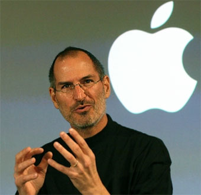

JOHANNES GUTENBERG
Nacido alrededor del año 1400 en Maguncia, Alemania, Gutenberg fue un orfebre e inventor alemán conocido por desarrollar la imprenta de tipos móviles hacia
1450. Su invención más famosa es la Biblia de 42 líneas, considerada el primer libro impreso con tipografía móvil2.
JAMES WATT

Nacido el 19 de enero de 1736 en Greenock, Escocia, Watt fue un ingeniero mecánico e inventor escocés. Mejoró significativamente la máquina de vapor de Newcomen,
lo que resultó fundamental para la Revolución Industrial. Su invención más importante fue el condensador separado, que aumentó la eficiencia de las máquinas de vapor5.
THOMAS EDISON
Nacido el 11 de febrero de 1847 en Milan, Ohio, Estados Unidos, Edison fue un inventor y empresario estadounidense. Es conocido por inventar la bombilla eléctrica,
el fonógrafo y la cámara de cine. A lo largo de su vida, Edison obtuvo 1,093 patentes8.
ALAN TURING
Nacido el 23 de junio de 1912 en Londres, Inglaterra, Turing fue un matemático y lógico británico. Es conocido por su trabajo en la descodificación de la máquina
Enigma durante la Segunda Guerra Mundial y por sus contribuciones a la informática teórica, incluyendo la máquina de Turing y el test de Turing11.
TIM BERNERS-LEE

Nacido el 8 de junio de 1955 en Londres, Inglaterra, Berners-Lee es un científico de la computación británico. Es conocido por inventar la World Wide Web en 1989,
lo que revolucionó la forma en que accedemos y compartimos información en Internet14.
STEVE JOBS

Nacido el 24 de febrero de 1955 en San Francisco, California, Estados Unidos, Jobs fue un empresario y diseñador industrial estadounidense. Co-fundador de Apple Inc.
, Jobs fue una figura clave en la revolución de la computación personal y en el desarrollo de productos icónicos como el iPhone, el iPad y el Mac17.
STEPHEN WOZNIAK
conocido como Steve Wozniak o "Woz", nació el 11 de agosto de 1950 en San José, California. Es un ingeniero electrónico, programador, filántropo y empresario estadounidense, famoso por ser cofundador de Apple Inc. junto a Steve Jobs en 19761.
Wozniak es reconocido por su papel crucial en la creación de las primeras computadoras personales exitosas, como el Apple I y el Apple II. El Apple I fue desarrollado en 1975 y comercializado en 1976, mientras que el Apple II, lanzado en 1977,
se convirtió en una de las primeras microcomputadoras de gran éxito producidas en masa1.
Después de dejar Apple en 1985, Wozniak fundó CL 9 y creó el primer control remoto universal programable. También ha sido un activo filántropo y ha fundado varias empresas tecnológicas a lo largo de los años
BILL GATES

Nacido el 28 de octubre de 1955 en Seattle, Washington, Estados Unidos, Gates es un empresario y filántropo estadounidense. Co-fundador de Microsoft, Gates jugó un papel crucial en la popularización de las computadoras personales.
También es conocido por su trabajo filantrópico a través de la Fundación Bill y Melinda Gates20.
ELON MUSK
Nacido el 28 de junio de 1971 en Pretoria, Sudáfrica, Musk es un empresario e inventor conocido por fundar SpaceX y co-fundar Tesla, Inc. Ha impulsado avances en la exploración espacial y en la industria de los vehículos eléctricos23.